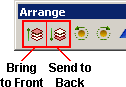
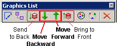
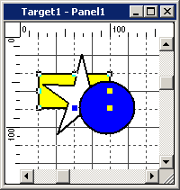
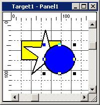
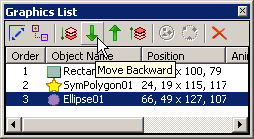
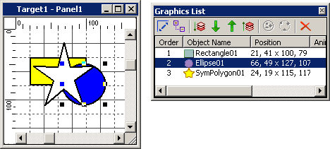
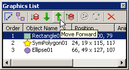
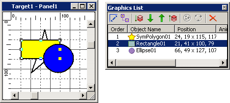

|
|
|
|
|
|
|
|
You can arrange the order of layered objects with the Order tools included in the Arrange menu (for simple layering) or in the Graphics List's toolbar (for more complex layering).
Arrange tools
With the Bring to Front and Send to Back tools, you can perform simple Order operations when you want to move an object to the top or bottom layer of several layered objects.
The Bring to Front and Send to Back operations can also be performed with their corresponding Arrange menu items, Arrange toolbar icons, or Graphics List toolbar icons.

Graphics List tools
With the Move Backward and Move Forward tools, you can perform more complex Order operations when you want to move one or more objects either up or down by only one layer at a time. These tools are particularly useful when multiple objects are overlapping.
The Arrange menu's Bring to Front and Send to Back tools are also available in the Graphics List's toolbar.

Select and right-click an object that is overlapped by one or more objects.

In the right-click menu, point to Order and click Bring to Front. The selected object moves to the top of the layered objects.

Objects drawn on top of an IE Browser object are not displayed in front of the IE Browser at runtime. Even if you select Bring to Front, the objects are not moved to the top of the IE Browser.
Select and right-click an object that is overlapping one or more objects.

In the right-click menu, point to Order and click Send to Back. The selected object moves to the bottom of the layered objects.
Select an object that is overlapping one or more objects.
In the Graphics List, click the Move Backward tool.

In the panel, the selected object moves one layer towards the bottom of the layered objects, and the Graphics List also displays the selected object in the order that corresponds to the latest move.


In the Graphics List, the Order column numbers the objects numbering begins with the object at the bottom layer. In other words, the object on the bottom layer is always 1 in the Order list.
Select an object that is overlapped by one or more objects.
In the Graphics List window, click the Move Forward tool.

In the panel, the selected object moves one layer towards the top of the layered objects, and the Graphics List also displays the selected object in the order that corresponds to the latest move.


The Graphics List sorts the objects' layers in a bottom-to-top order. In other words, the object on the bottom layer is always 1 in the Order list.